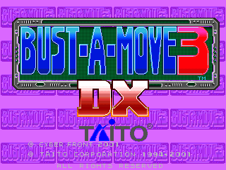
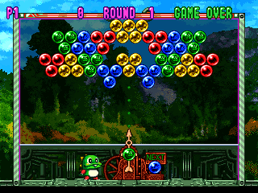

名稱：泡泡龍3／電玩泡泡龍3 (Bust-A-Move 3／Puzzle Bobble 3，英文版) 簡介：TAITO 1996年出品的泡泡龍益智解謎遊戲，2001年移植至Windows，由CyberFront代理 發行 [待補]。   備註：本版為DX豪華版 保護：光碟 備註：VirtualBox無法執行，虛擬機請使用VMware+WineD3D。 備註：遊戲執行後，一開始會檢測顯示卡，需要花一點時間。

